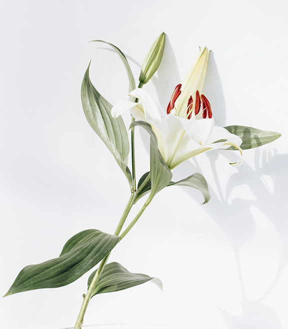
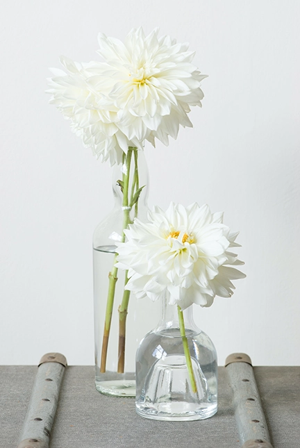
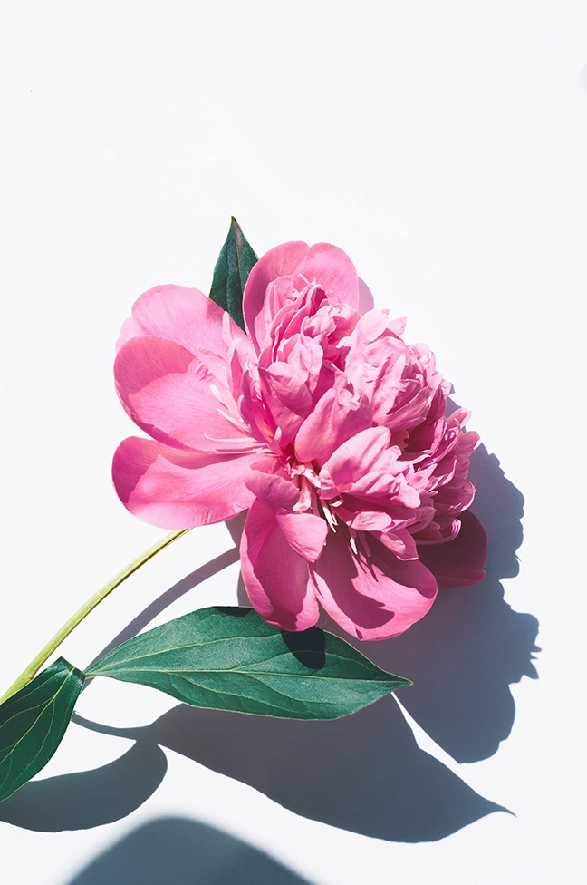

1
Sunflower
They are bright and cheery, and as warm and inviting as the sweet summer sun. With brilliant yellow petals, also known as “rays,” sunflowers have an unmistakable sun-like appearance that has made them a crowd favorite, especially in the summer months.
$35.99
2

White Rose
The white rose is the most versatile rose color. This flower is able to convey romance, appreciation, compassion and purity.While white roses make a fantastic gift, you can also use them to decorate your home if you want a simple and classic look.
$55.00
3
Hydrangea
Hydrangea represents gratitude, grace and beauty. It also radiates abundance because of the lavish number of flowers and the generous round shape. Its colours symbolise love, harmony and peace.
$40.00
4

Lily
The lily is simply bursting with symbolism. We've highlighted four in-depth below: femininity, love, purity and grief. They're what makes this flower perfect for friendship bouquets, full of happiness at weddings, and solemn and serious for funerals.
$30.00
5

Common Daisy
He loves me, he loves me not' is a familiar rhyme associated with what is probably our most well-known plant: the common daisy. Its white-and-yellow flower heads brighten up lawns, verges and short turf almost everywhere.
$20.00
6

Dahlia Pinnata
One of the most beloved summer flowers, dahlias are often seen at farmer's markets, flower competitions, and weddings—especially dinner plate varieties that can grow to be as large as your head!!.
$35.00
7

Peony
Peony represents wealth and honor. It also embody romance and love, and are regarded as the omen of good fortune and happy marriage. They are the 12th wedding anniversary flower. A peony is one plant you will enjoy for a long time
$20.00
8
Red Tulip
Their deep red hues evoke feelings of passion, love, and lust – making them an especially popular choice for new, younger couples. They can also mean “believe me,” or “my feelings are true.” So the next time you're trying to “woo” the person you admire, send them an alluring bouquet of red tulips.
$35.00
9

Custom Made FLowers
Here you can make a custom unique, Flower bouquet of your choice! prices would vary on how many or types of flowers you order.